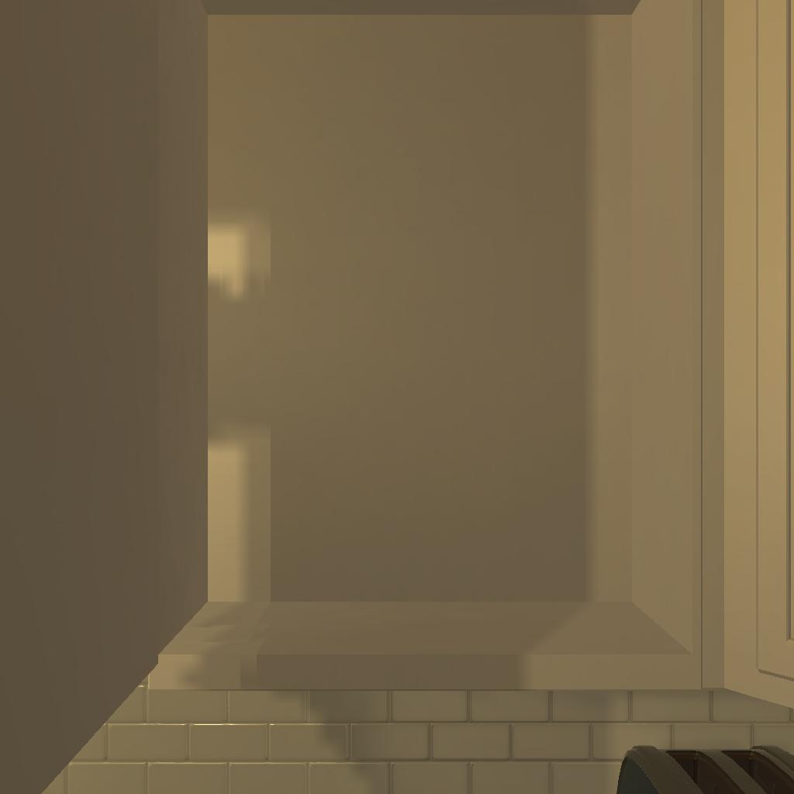

---------------------------------------------------------task: 29---------------------------------------------------------
--------------------------------------------------------------------------------------------------------------------------------------------------------------------
--------------------------------------------------------------------------------------------------------------------------------------------------------------------
Step:--------------------------------------------------------------------------10-------------------------------------------------------------------------------
----------------------------------------
VLM Prompt:
**Task**
Please perform as an embodied AI agent. Our final objective is to find two tomato and put them in countertop. Below is the plan for completing the task, the current observation, alongside historical data and admissible actions for the next step. Please determine the best action for the next step!
**Plan**
Below is a detailed step-by-step plan to complete the task.
1. Find a tomato.
2. Pick up the tomato.
3. Find a countertop.
4. Place the picked-up tomato on the countertop.
5. Find another tomato.
6. Pick up the tomato.
7. Return to the previously located countertop.
8. Place the picked-up tomato on the countertop next to the other tomato.
**Current Observation**
Displayed is an image capturing the current position of the agent.
**History Information**
Displayed are the previous observations with their corresponding actions.
State 0:
No history.
State 1:
1. Step Index in the Plan: 1
2. Objects: Sink, Tomato
3. Action: go to sink 1
State 2:
2. Step Index in the Plan: 2
3. Objects: Tomato, Fork, Egg, Sink, Pan, Faucet
4. Action: take tomato 1 from sink 1
State 3:
1. Step Index in the Plan: 3
2. Objects: Tomato (picked up), Sink, Fork, Egg, Pan
3. Action: go to countertop 1
State 4:
1. Step Index in the Plan: 4
2. Objects: Tomato, Microwave, Countertop
3. Action: put tomato 1 in/on countertop 1
State 5:
1. Step Index in the Plan: 5
2. Objects: Countertop, Microwave, Tomato (already placed)
3. Action: go to fridge 1
State 6:
1. Step Index in the Plan: 5
2. Objects: Fridge, Magnetic Letters, Pictures
3. Action: open fridge 1
State 7:
1. Step Index in the Plan: 5
2. Objects: Egg, Potato
3. Action: go to cabinet 1
State 8:
1. Step Index in the Plan: 5
2. Objects: Closed Cabinet Door
3. Action: open cabinet 1
State 9:
1. Step Index in the Plan: 5
2. Objects: None visible
3. Action: go to cabinet 2
State 10:
Step Index in the Plan: 5
Objects: Countertop, Stove, Toaster, Cabinets
Action: go to cabinet 3
**Admissible Actions**
(1): go to cabinet 1
(2): go to toaster 1
(3): go to cabinet 4
(4): go to cabinet 5
(5): go to microwave 1
(6): go to garbagecan 1
(7): go to countertop 1
(8): go to drawer 1
(9): go to cabinet 6
(10): go to cabinet 7
(11): go to drawer 2
(12): go to stoveburner 1
(13): go to stoveburner 2
(14): go to countertop 2
(15): go to cabinet 8
(16): go to cabinet 9
(17): go to cabinet 10
(18): go to drawer 3
(19): go to drawer 4
(20): go to stoveburner 3
(21): go to stoveburner 4
(22): go to cabinet 11
(23): go to cabinet 12
(24): go to cabinet 13
(25): go to cabinet 14
(26): go to sinkbasin 1
(27): go to sink 1
(28): go to cabinet 15
(29): go to fridge 1
(30): go to cabinet 16
(31): go to cabinet 17
(32): go to cabinet 18
(33): go to cabinet 19
(34): go to diningtable 1
(35): go to coffeemachine 1
(36): go to cabinet 20
(37): open cabinet 3
(38): close cabinet 3
**Analysis Guideline**
1. Analyze the history and current observation, and then determine our current step in the plan and our current place.
2. List all visible objects related to the task in the current observation, without summarizing any as "various items."
3. Analyze the objects in the current observation based on the history and the requirements for the current step, and then determine if we can complete the step with the current observation.
4. Analyze and decide on the most appropriate action to take.
5. Summarize the analysis using the following format: "Analysis: [The summarization of the analysis], The Most Appropriate Action: (i which is the integer.): [Selected action]"
**Notes**
1. We must complete each step of the plan in order and cannot skip steps when the previous ones are not finished.
2. For "Go to" actions listed as "go to xxx [n]", interpret this as there are n distinct actions available: "go to xxx 1", "go to xxx 2", ..., "go to xxx n". Select one specific action from these options instead of using "go to xxx [n]".
3. If receptacles such as drawers, cabinets, and so forth are closed in the current observation, we may try to open them.
4. Pay attention to synonyms and ensure clarity in the terms used.
5. We must determine and provide the single action which must be in the **Admissible Actions**.
6. If there is no history available, we are at the first step and the current place is "Unknown".
**Answer**
Please select the most suitable action by following the **Analysis Guideline**, keeping the above **Notes** in mind.
----------------------------------------
----------------------------------------
VLM Response:
Analysis: According to the plan, our current step is to find another tomato after successfully placing the first one on the countertop. The historical data indicates that we have already checked cabinets 1 and 3 and the fridge without finding a tomato. The current observation does not show any tomatoes or new areas where a tomato might be found; it only shows a blank wall and part of a countertop. Since we need to continue searching for a tomato in the kitchen, we should move to a new location that has not been checked yet.
The Most Appropriate Action: (37): open cabinet 3
----------------------------------------
----------------------------------------
>>> Refine VLM Response and Get Pure Action: open cabinet 3
----------------------------------------
-----------------------------------------------------------------
Running time: 6.81168007850647 seconds
Total Money: 0
-----------------------------------------------------------------
-----------------------------------------------------------------
Summarization Prompt:
**Context**
Analysis: Since there is no history information, we are at the first step in the plan, which is to find a statue. The current place is unknown. In the current observation, we see a floorlamp next to an armchair with a small table that has a small object on it, which could potentially be the statue we are looking for. Since the plan requires us to find a statue first and it appears there might be one on the table next to the armchair, we should investigate this object to determine if it is the statue we need.
The Most Appropriate Action: (1): go to armchair 1
**Summary**
1. Step Index in the Plan: 1
2. Objects: Floorlamp, Armchair, Small Table, Small Object (potential statue)
3. Action: go to armchair 1
**Context**
Analysis: According to the plan, our current step is to find another tomato after successfully placing the first one on the countertop. The historical data indicates that we have already checked cabinets 1 and 3 and the fridge without finding a tomato. The current observation does not show any tomatoes or new areas where a tomato might be found; it only shows a blank wall and part of a countertop. Since we need to continue searching for a tomato in the kitchen, we should move to a new location that has not been checked yet.
The Most Appropriate Action: (37): open cabinet 3
Please summarize the context by following above examples when providing the summary, and ensure that only the summary is included, without any extra explanation.
**Summary**
-----------------------------------------------------------------
-----------------------------------------------------------------
Summarization Response:
2. Step Index in the Plan: Next step after placing the first tomato on the countertop
3. Objects: Cabinets 1 and 3, Fridge, Blank wall, Part of countertop
4. Action: open cabinet 3
-----------------------------------------------------------------
-----------------------------------------------------------------
Text Observation:Nothing happens.
-----------------------------------------------------------------
UNSUCCEED